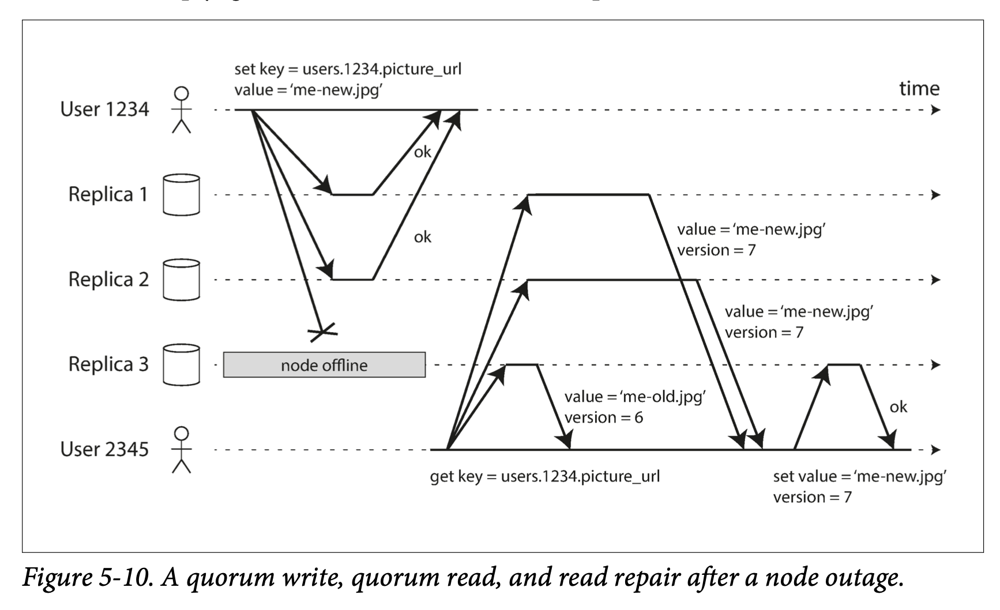
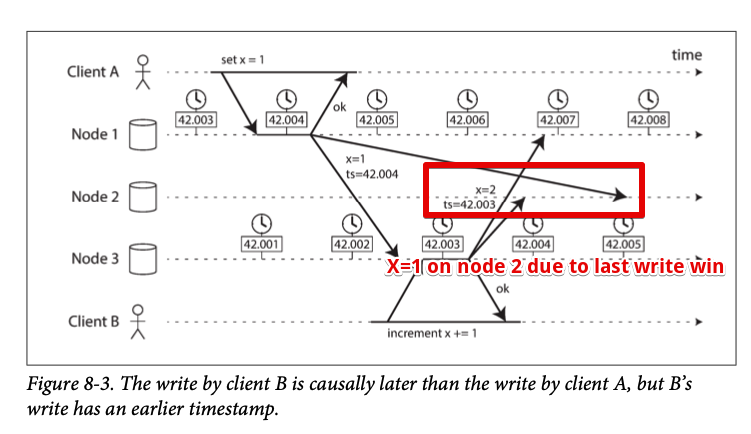

Chapter 9
As chapter 8 notes, a lot of things can go wrong in distributed systems. This chapter we will talk about algorithms and protocols that tolerate fault in building distributed systems.
We assume packets can be lost, reordered, duplicated, or arbitrarily delayed in network; clocks are not completely synchronized; and nodes can pause or crash at any time.
The best way of building fault-tolerant systems is to find general purpose abstractions with guarantees and let application rely on those guarantees. Similar to transactions in Chapter 7#What is transaction?, by using a transaction, the application can pretend there is not crash on database server, nobody is concurrently accessing the database(isolation), and that storage devices are perfectly reliable(durability). Even though these problem do occur, abstraction hide those away from application so that it doesn't need to worry about them
Following this chain of thought, we seek abstraction that can allow an application to ignore problems with distributed systems. Consensus is one of the most important abstractions in this context. That is, getting all node to agree on something.
Once we have implementation of consensus, application can use it for various purpose. For example, say we have a database with a single leader. If the leader dies and we fail over to another node, the remaining database nodes can use consensus to elect a new leader. It's important all nodes agree who is the new leader. If 2 nodes believe they both are leader, the situation is called split brain and it often leads to data loss. Correct implementation of consensus help to avoid this problem
First we need to explore the range of guarantees and abstractions that can be provided in a distributed system
We need to understand the scope of what can and cannot be done. In some situation, it's possible for the system to tolerate fault and continue to work. In other situation, it is not possible.
Consistency Guarantees¶
Replication lag leads to issues when you look at 2 database nodes at the same moment. Because you likely to see different data on two nodes.
Most replicated databases provide at least eventual consistency which means after some period of time, all database nodes eventually return same value for a given request. A better name for eventual consistency is convergence, as we expect all replicas converge to same value
This is a very weak guarantee, because it doesn't say anything about when the replicas converge. Until the time of convergence, reads could return anything. For example, if you immediately read after you write, there is not guarantee that you see the value you just wrote. Because the read may routed to another node which doesn't apply your write yet.
Eventual consistency is hard for application developers because it is very different than single threaded program. If you assign a value to a variable and read it again, you don't expect to see previous value or null.
When working with a database with weak guarantees, we need to constantly aware of its limitations and not assume much. Otherwise bugs will be hard to find by testing because application may work most of the time. The edge case of eventual consistency may occur only during network interruption or high concurrency
Data systems with stronger guarantee usually have worse performance but they are appealing because they are easier to use correctly. Once we seen different consistency models, we will be in a better position to decide which one best fits our needs.
There is similarity between distributed consistency models and transaction isolation levels. (repeatable reads, snapshot isolation, SSI) But while there is overlap, they are mostly independent: transaction isolation is avoiding race conditions due to concurrently executing transactions, whereas distributed consistency is mostly about coordinating the state of replicas in the face of delays and faults
This chapter will cover - Strongest consistency model in common use, linearizability and its pros and cons - Issues of ordering events in distributed system, particularly around causality and total ordering - How to atomically commit a distributed transaction
Linearizability¶
Wouldn't it be a lot of simpler if the database could give the illusion that there is only one replica? This is the idea behind linearizability (aka atomic consistency, strong consistency, immediate consistency, external consistency) All operation are atomic (either succeed or fail, not in between and no one can see it in between). With this guarantee, even though there may be multiple replicas in reality, the application does not need to worry about them.
In a linearizable system, as soon as one write finished, all client reads from database must be able to see the value just written. In other words, linearizability is a recency guarantee
What Makes a System Linearizable?¶
Multiple clients read same key x. In distributed systems literature, x is called register. In practice, it could be key in key-value store, or one row in relational database, or one document in document database.
each bar is a request send by the client. Start is when the request was sent. End is when response was received by the client
In this example, the register has 2 type of operations - read(x) => v database return the value of register x - write(x) => v database return ok or error
What are possible responses that A and B might get for their read request? - before write completed. which is 0 - after write has completed. 1 - in between, either 0 or 1. These operations are concurrent with the write
To make system linearizable, we need to add another constraint If one client read returns 1, all subsequent reads must return the new value, even if the operation has not completed. I had question on this regarding dirty read. But Martin explained in later example because linearizability is not isolation level in transactions
This model doesn’t assume any transaction isolation: another client may change a value at any time. Client B’s read returned 1 before client A received its response from the database, saying that the write of the value 1 was successful. This is also okay: it doesn’t mean the value was read before it was written, it just means the ok response from the database to client A was slightly delayed in the network.
Because this is from client's perspective, ok response is just delay in the network instead of server actually return the value before write operation is comitted.
To refine this timing diagram, we add a 3rd type of operation
- cas(x, v_old, v_new) => r means the client requested an atomic compare-and-set operation. If register x equals to v_old it should atomically set x to v_new. If x is not equal to v_old, it should return error
example come from this reference [10]
Linearizability vs Serializability¶
They get easily confused as both words mean something like "can be arranged in a sequential order". Here is the difference Serializability is an isolation property of transactions which may contain multiple read and write Linearizability is a recency guarantee on reads and writes of a register. It doesn't group operations together into transactions and does not prevent write skew
Implementation of serializability based on two phase locking or actual serial execution are linearizable. But serializable snapshot isolation is not linearizable because the whole point of consistent snapshot is not include writes that are more recent than the snapshot. And thus reads from snapshot are not linearizable
Relying on Linearizability¶
There are few areas linearizability is important requirements
Locking and leader election¶
One way of electing leader is to use lock. No matter how this lock is implemented, it must be linearizable: all nodes must agree which node owns the lock; otherwise it is useless.
Coordination service such as Zookeeper and etcd are often used to implement distributed locks and leader election. They use consensus algorithm to implement linearizable operations in a fault-tolerant way. There are still many subtle details to implementing locks correctly. Libraries like Apache Curator providing higher-level recipes on top of ZooKeeper.
Constraints and uniqueness guarantees¶
Username or email address have uniqueness constraints. You need linearizability when you want to enforce this constraints. Similar to lock and compare-and-set where it will return error if username is already exist or lock is being hold by someone else
Cross-channel timing dependencies¶
Linearizability violation was only noticed when additional communication channel is available (Alice voice to Bob's ears)
Similar situation can arise in computer system
Above works fine if the file storage is linearizable. If it is not, message queue might be faster than replication inside file storage. In this case, when resizer fetch the image, it will get older version or nothing at all.
Problem exists because there are two different communication channels. If you own the communication channel, use reading your own writes can be effective
Implementing Linearizable System¶
Since linearizable means there appears to be single copy of data and all operation are atomic. Simplest answer is just to have single copy of the data. But fault-tolerant system need multiple copy of data. And from Chapter 5 there are 3 ways we could replicate data Single leader replication (potentially linearizable) When read from leader. or synchronously updated followers. it is potentially linearizable. However, not all single leader database is actually linearizable either by design (uses snapshot isolation) or due to concurrency bugs
Using leaders for reads relies on the assumption you know for sure this is the leader (sometimes node believe it is the leader but it is not due to network issue or process pause) With asynchronous replication, failover may even lose committed writes, which violates both durability and linearizability Consensus algorithms (linearizable) consensus protocols contain measures to prevent split brain and stale replicas. With these constraints, consensus algorithms can implement linearizable safely. This is how ZooKeeper and etcd work
Multi-leader replication (Not linearizable) Multi leader database processes writes on multiple nodes and asynchronously replicated to other nodes. This will result in write conflict. Such conflict are result of the lack of single copy of the data.
Leaderless replication (Possibly linearizable)
Linearizability and quorums¶
it seems as though strict quorum reads and writes should be linearizable in a Dynamo-style model. However, when we have variable network delays, it is possible to have race conditions
B's read is after A but get old value Same as Alice and Bobs's situation It is possible to make Dynamo-style quorums linearizable at the cost of performance. For example, reader performs read repair 
In summary, it is safest to assume that a leaderless system with Dynamo-style replication does not provide linearizability.
The Cost of Linearizability¶
CAP theorem¶
CAP is sometimes presented as Consistency, Availability, Partition tolerance: pick 2 out of 3. But putting this way is misleading because network partition is only one kind of fault where you can't do anything about it. They will happen whether you like it or not
And its definition of availability does not match its usual meaning 40 so it is best to avoided for understand systems
The CAP theorem as formally defined [30] is of very narrow scope: it only considers one consistency model (namely linearizability) and one kind of fault (network partitions, or nodes that are alive but disconnected from each other). It doesn’t say anything about network delays, dead nodes, or other trade-offs. Thus, although CAP has been historically influential, it has little practical value for designing systems [9, 40].
Linearizability and network delays¶
Although linearizability is a useful guarantee, surprisingly few system are actually linearizable in practice. Even RAM on a modern multi-core CPU is not linearizable 43 If a thread running on one CPU core writes to memory address, and a thread on another CPU core reads the same address shortly afterwards, it is not guaranteed to read the value written by the first thread (unless a memory barrier or fence is used)
seems like hardware face similar issue. (memory hierarchy?)
The reason for this behavior is that every CPU core has its own memory cache (L1, L2, L3 cache) and store buffer. Memory access first goes to cache by default. And any changes are asynchronously written out to main memory. This feature is essential for good performance on modern CPUs. But now there are several copies of the data. (one in main memory, many in various caches), and these copies are asynchronously updated, so linearizability is lost.
It make no sense to justify the multi-core memory consistency model: In one computer we assume reliable communication and we don't expect one CPU core to be able to continue operating normally if it is disconnected from the rest of the computer. The reason for dropping linearizability is performance not fault tolerance.
The same is true for distributed databases (not because of fault tolerance but favor performance instead of linearizability)
Can’t we maybe find a more efficient implementation of linearizable storage? It seems the answer is no: Attiya and Welch [47] prove that if you want linearizability, the response time of read and write requests is at least proportional to the uncertainty of delays in the network.
Faster algorithm does not exist, but weaker consistency model can be much faster.
Ordering Guarantees¶
Linearizability behaves as if one copy of data exists and all operation appears to take effect atomically at one point in time. This definition implies that operations are executed in some well-defined order.
Ordering has been a recurring theme in this book which suggests this might be an important fundamental idea. To recap - In Chapter 5, the main purpose of single leader replication is to determine the order of writes in the replication log. If there is not single leader, conflicts can occur. - Serializability discussed in Chapter 7 is about transactions executed in some sequential order. - The use of timestamp and clocks in distributed system discussed in Chapter 8 is another attempt to introduce order into disorderly world.
Ordering and Causality¶
One of the reason ordering keeps coming up is that it helps preserve causality. Several examples are discussed
- Chapter 5#Consistent Prefix Reads. We saw example of observer saw the answer to the question first. This violates the intuition of cause and effect (doesn't make sense the person giving answer before the question is asked. Assuming this person cannot see in the future) We say there is causal dependency between question and answer
- Doctor example in write skew is also a causal dependency
 - Alice and Bob is also an example of causality violation
- Alice and Bob is also an example of causality violation
Causal order is not total order¶
A total order allows any 2 elements to be compared. For example, natural numbers are totally ordered. However, mathematical sets are not totally ordered: is {a,b} greater than {b,c}? well, you can't really compare them because neither is a subset of the other. We say they are incomparable. Therefore mathematical sets are partially ordered. Some cases one set is greater than another (if one set contains all the element of another), but in other cases they are incomparable.
Total order and partial order is reflected in database consistency models: Linearizability In a linearizable system, we have total order of operations. That is, any 2 operations we can always say which one happened first. Causality Two events are ordered if they are causally related, but they are incomparable if they are concurrent. This means causality defines a partial order, not a total order.
Therefore, according to this definition, there is no concurrent operations in linearizable datastore: There must be a single timeline along which all operations are totally ordered.
Concurrency would mean that the timeline branches and merges again and in this case, operations on different branches are incomparable
 timeline branches and merges when two client editing the shopping cart
Version control systems such as Git and its version histories are very much like the graph of causal dependencies.
timeline branches and merges when two client editing the shopping cart
Version control systems such as Git and its version histories are very much like the graph of causal dependencies.
Linearizability is stronger than causal consistency¶
Linearizability implies causality but linearizability has cost of performance. Good news is that linearizability is not the only way of preserving causality. In fact, causal consistency is the best possible consistency model that does not slow down due to network delays and remains available when network failure happens.
Capturing causal dependencies¶
you need to know which operation happens before which other operation in order to maintain causality.
In order to determine causal dependencies, we need some way of describing the "knowledge" of a node in the system. If a node had already seen the value X when it issued the write Y, then X and Y may be causally related.
Version vectors can be generalized to determine happens before relationship 54 just like the shopping cart example, the version number from the prior operation is passed back to the database on a write.
Sequence Number Ordering¶
Actually keeping track of all causal dependencies can become impractical. In many applications, clients read lots of data before writing something, and then it is not clear whether the write is causally dependent on all or only some of those prior reads. Explicitly tracking all the data that has been read would mean a large overhead.
There is a better way. We can use sequence numbers or timestamps to order events. A timestamp need not come from a time-of-day clock (or physical clock). Logical clock would suffice. Typically using counters that are incremented for every operation. Sequence numbers provide total order that is, we can always compare two sequence numbers to determine which is greater or happens later
Sequence numbers can be generated in an order that is consistent with causality. In a database with single-leader replication, the replication log defines a total order of write operations that is consistent with causality. The leader can simply increment a counter for each operation and assign this monotonically increasing sequence number to each operation in the replication log.
Noncausal sequence number generators¶
For non-single leader databases. Various methods are used in practice: - Each node can generate its own independent set of sequence numbers. You want to reserve some bits in the binary representation of the sequence number to contain a unique node identifier. For example, if you have 2 nodes, one node can generate only odd numbers a the other only even numbers. - You can attach a timestamp from the time of the day clock to each operation. This fact is used in the last write wins conflict resolution method - You can preallocate blocks of sequence numbers. For example, node A might claim of block of sequence number from 1 to 1000, and node B might claim the block from 1001 to 2000. Then each node can independently assign sequence numbers from its block, and allocate a new block when its supply of sequence numbers begins to run low
These 3 options all perform better and are more scalable than pushing all operations through a single leader that increments a counter. However, they all have a problem: the sequence numbers they generate are not consistent with causality
The causality problems occur because these sequence number generators do not correctly capture the ordering of operations across different nodes: - Each node may process a different number of operations per seconds. Thus, if one node generates even numbers and the other generate odd numbers, the counter for even numbers may lag behind the counter for odd numbers, or vice versa. You cannot accurately tell which one causally happened first if you have an odd-number operation and an even numbered operation - Physical timestamps are subject to clock skew which inconsistent with causality.  - In the case of block allocator, one operation may be given a sequence number in the range from 1001 to 2000, and a causally later operation may be given a number in the range from 1 to 1000. Again, didn't capture causality
Lamport timestamps¶
Lamport timestamp proposed in 1978 by Leslie Lamport is sequence numbers that is consistent with causality. 56 is one of the most cited paper in distributed systems
The Lamport timestamp is simply a pair of (counter, nodeID). Each node has a unique identifier and each node keeps a counter of the number of operations it has processed.
lamport timestamp bears no relationship to physical clock
Two node might have same counter value, but by including the node ID in the timestamp, each timestamp is made unique
Lamport timestamp provides total ordering: greater counter is the greater timestamp; if the counter values are the same, the one with the greater node ID is the greater timestamp
The key idea about Lamport timestamps, which makes them consistent with causality, is this: every node and every client keeps track of the maximum counter value it has seen so far, and includes that maximum on every request. When a node receives a request or response with a maximum counter value greater than its own counter value, it immediately increases its own counter to that maximum.
Timestamp ordering is not sufficient¶
Although lamport timestamp define total order that is consistent with causality, it is not sufficient to solve many common problems in distributed systems.
For example, consider a system that needs to ensure that a username uniquely identifies a user account. If 2 users concurrently try to create an account with the same username, one of the two should succeed and the other should fail.
Let's say we decide to pick earlier writer as winner. But this is determining the winner after the fact. Once you have collected all the username creation operation in the system, you can compare their timestamps.
This is not sufficient when a node just received a request from a user to create a username because it needs to decide right now whether the request should succeed or fail. At that time, the node doesn't know there is other request that has same username.
In order to ensure about no nodes create an username with lower timestamp, we would have to check with every other node to see what it is doing. If one node is failed or cannot be reached due to a network problem, this system grind to a halt. This is not what we want for a fault-tolerant system!
The problem here is total order only emerges after we have collected all of the operations.
To conclude: in order to implement uniqueness constraint for usernames, it's not sufficient to have a total ordering of operations. We need to know when the order is finalized. This idea of knowing when your total order is finalized is captured in the topic of total order broadcast
Total Order Broadcast¶
The challenge is hot to scale the system if the throughput is greater than a single leader can handle and also how to handle failover if the leader fails. In distributed system literature, this problem is known as total order broadcast or atomic broadcast 57, 58
Total order broadcast is protocol for exchanging messages between nodes. It requires 2 safety properties always be satisfied: Reliable delivery No messages are lost: if a message is delivered to one node, it is delivered to all nodes. Totally ordered delivery Messages are delivered to every node in the same order.
A correct algorithm for total order broadcast must ensure that the reliability and ordering properties are always satisfied, even if a node or the network is faulty. Of course message cannot be delivered while the network is interrupted. Algorithm can keep retrying so that the message get through when the network is repaired.
Using total order broadcast¶
Consensus services such as ZooKeeper and etcd actually implement total order broadcast. This shows there is strong connection between total order broadcast and consensus
Total order broadcast is exactly what we need for database replication: if every write message get processed in the same order, all replicas will remain consistent with each other. This principle is known as state machine replication
Similarly, total order broadcast can be used to implement serializable transactions
An important aspect of total order broadcast is that the order is fixed at the time the messages are delivered. Node is not allowed to insert a message into previous broadcasted messages.
Another way of looking at total order broadcast is that it is a way of creating a log (replication log, transaction log, or write-ahead log) broadcast is appending to the log all nodes can read the log and deliver the same messages in the same order
Total order broadcast is useful for implementing a lock service that provides fencing tokens. Every request to acquire the lock is appended as a message to the log, and all messages are sequentially numbered in the order they appear in the log. The sequence number can then serve as a fencing token, because it is monotonically increasing.
Implementing linearizable storage using total order broadcast¶
Total order broadcast guarantee to deliver messages reliably in a fixed order, but there is no guarantee when a message will be delivered. By contrast, linearizability is a recency guarantee: a read is guaranteed to see the latest value written
If you have total order broadcast, you can build linearizable storage on top of it. Imagine for every possible username, you can have a linearizable register with an atomic compare-and-set operation. Every register initially has the value null. When user wants to create a username, you execute a compare-and-set operation on the register for that username, under the condition previous register value is null. If multiple users try to concurrently grab the same username, only one of the compare-and-set operations will succeed.
You can implement such a linearizable compare-and-set operation as follows by using total order broadcast as an append-only log 62, 63 1. Append a message to the log, tentatively indicating the username you want to claim 2. Read the log, and wait for the message you appended to be delivered back to you 3. Check the log. If the first message for your desired username is your own message, then you are successful: you can commit the username claim and acknowledge it to the client. If the first message for your desired username is from another user, you aborted the operation
Because log entries are delivered to all nodes in the same order. Choosing the first of the conflicting writes as the winner and abort later ones ensures uniqueness on all nodes.
This procedure provides linearizable writes but not linearizable reads. To make reads linearizable, there are few options:
1. You can sequence reads through the log by appending a message, reading the log, and performing the actual read when the message is delivered back to you. The message's position in the log defines the point in time at which the read happens (Quorum reads in etcd work like this 16)
2. If the log allows you to fetch the position of latest log message in a linearizable way, you can query that position, wait for all entries up to that position to be delivered to you, and then perform the read (this is ZooKeeper's sync() operation)
3. You can make your read from a replica that is synchronously updated on writes and thus is sure to be up to date (this technique is used in chain replication)
Basic idea behind this is still the log. I strongly recommend reading this article about the log
Implementing total order broadcast using linearizable storage¶
Let's turn it around. Assume we have linearizable storage, and show how to build total order broadcast from it
The easiest way is to assume we have a linearizable register that stores an integer and that has an atomic increment-and-get operation 28 or atomic compare-and-set operation will do the job
The algorithm is simple: for every message you want to send through total order broadcast, you increment-and-get the linearizable integer, and attach the value you got from the register as sequence number to the message. Then send message to all nodes and recipients will deliver the messages consecutively by the sequence number
How hard could it be to make a linearizable integer with an atomic increment-and-get operation? It would be simple if things never fail. But in case of network interruption, linearizable sequence number generators eventually end up with a consensus algorithm. This is no coincidence: it can be proved that a linearizable compare-and-set register and total order broadcast are both equivalent to consensus 28, 67 That is, if you solve one of these problems, you solve all of them
This is just similar to applying algorithms. Main problem is not implementation but transform existing problem into something we already know how to solve tango reference is essentially journal... Let's head to consensus
Distributed Transactions (consensus)¶
Consensus is one of the most important and fundamental problems in distributed computing. The goal is simply to get several nodes to agree on something. We might think this shouldn't be too hard but many broken system have been built in mistaken belief that this problem is easy to solve.
The reason why this important topic shows up this late in this book is because it requires some prerequisite knowledge. Even in academic search community, the understanding of consensus gradually crystallized over the course of decades.
With understanding of replication (Chapter 5), transactions (Chapter 7), system models (Chapter 8), linearizability, and total order broadcast, we are finally ready to tackle the consensus problem
Here are some situations for nodes need to agree. Leader election In a single leader replication database, all nodes need to agree on which node is the leader. In this case, consensus is important to avoid a bad failover (result in split brain which 2 nodes believe they are leader). If there were two leaders, they would both accept writes and their data would out of sync, leading to inconsistency and data loss Atomic commit In a database that supports transactions over several nodes or partitions, we have the problem that a transaction may fail on some nodes but succeed on others. If we need atomicity in transaction (A in ACID), we need all nodes to agree on the outcome of the transaction: either they all abort/roll back or they all commit. This instance of consensus is known as the atomic commit problem
The impossibility of Consensus¶
FLP result 68 -- named after authors Fischer, Lynch, and Paterson-- which proves that there is no algorithm that is always able to reach consensus. yet we are discussing algorithms for achieving consensus, what is going on here?
Answer is that FLP result is proved in the asynchronous system model, a very restrictive model that assumes a deterministic algorithm that cannot use any clocks or timeouts. If the algorithm is allowed to use timeouts, or other way to identify suspected crashed nodes then consensus becomes solvable 67
FLP is important for theoretical importance, distributed systems can achieve consensus in practice
This section will examine atomic commit in detail. We will discuss two-phase commit algorithm, which is the most common way of solving atomic commit and implemented in various databases, messaging systems, and application servers.
It turns out 2PC is kind of a consensus algorithm but not very good one 70, 71
By learning 2PC, we will explore better consensus algorithm. Such as Zab (used in ZooKeeper) and Raft (used in etcd)
Two-Phase commit (2PC)¶
In Chapter 7 we define transaction atomicity to simplify semantics for application developer. For a transaction involved in multiple writes, either it commit (all writes made durable) or abort (all writes roll back)
Atomicity prevents half-finished results and half-updated state in database. This is especially important for multi-object transactions and databases that maintain secondary indexes.
In a single node machine, we can just check if commit record is written to WAL or not. What about multiple nodes are involved in a transaction? In this case, it is not sufficient to send a commit request to all nodes and let each node independently commit the transaction. Because of doing this it will easily get out of sync where some nodes succeed and others failed. Here is few example:
- Some nodes may detect a constraint violation and abort is necessary. While other nodes are successfully able to commit
- Some of the commit request might be lost in the network, eventually abort due timeout. While other commit request might get through
- Some nodes may crash before the commit record is fully written and rolled back locally while others successfully commit
A transaction commit must be irrevocable -- you are not allowed to change committed transactions. Thus we need two-phase commit to achieve atomicity
Introduction to two-phase commit¶
Two-phase commit is the algorithm for achieving atomic transaction commit across multiple nodes (i.e. ensure all nodes either commit or abort)
The basic flow of 2PC is to split commit/abort process into two phases (hence the name)

2PC uses a new component called coordinator (aka transaction manager). The coordinator or transaction manager is often implemented as a library within the same application process that is requesting the transaction
A 2PC transaction begins reading and writing data on multiple database nodes as normal. These involved database nodes are called participants. When application is ready to commit, the coordinator begins phase 1: it sends a prepare request to each of the nodes. Asking them whether they are able to commit. Then transaction manager tracks the responses from the participants: - If all participants reply "yes", then coordinator/transaction manager sends out a commit request in phase 2, and commit actually takes place. - If any nodes replies "no", the coordinator/transaction manager sends abort request to all nodes in phase 2.
Similar to wedding, when minister asks bride and groom individually whether each wants to marry the other. After receiving "yes" from both, minister pronounces the couple husband and wife. If any one says no, the ceremony is aborted.
A system of promises¶
Why 2PC works? Wouldn't prepare and commit message can be lost as well? To understand, we have to break down the process in more detail: 1. when application wants to begin a distributed transaction, it requests a transaction id from coordinator/transaction manager. This transaction id is globally unique 2. The application begins a single-node transaction on each of the participants, and attaches the globally unique transaction ID to single node transaction. All reads and writes are done in one of these single node transactions. If anything goes wrong, the coordinator/transaction manager or participants can abort. 3. When application is ready to commit, coordinator/transaction manager sends a prepare request to all participants, tagged with global transaction id. If any of requests fails or timeout, coordinator sends an abort request for that transaction id to all participants. 4. When participant receives prepare request, it makes sure that it can definitely commit the transaction under all circumstances. (writing all data to disk and checking for any conflicts or constraint violations) By replying "yes" to coordinator, the node promises this transaction can be committed no matter what upon request. 5. When coordinator/transaction manager received response from all participants, it makes definitive decision whether commit or abort. The coordinator must write this decision to its transaction log on disk so that it knows which way it decided in case it crashes. This is called the commit point 6. Once decision has been written to disk, the commit or abort request is sent to all participants. If this request fails or times out, the coordinator must retry forever until it succeeds. There is no more going back
Thus, this protocol contains two crucial "point of no return" 1. When a participant votes "yes", it promises that it will definitely be able to commit later 2. Coordinator decides and this decision is irrevocable. Single node atomic commit put those 2 into 1, writing the commit record to the transaction log
Coordinator failure¶
What happens if coordinator/transaction manager crashes? 1. it participant know coordinator crash before receive prepare request, they can freely abort. 2. If they have receive prepare request and voted yes. Then there is no choice but wait for coordinator to recover This is why coordinator must write decision to a transaction log on disk before sending commit or abort requests. when the coordinator recovers, it determines the status of all in-doubt transactions by reading its transaction log. Any transactions that don't have a commit record in the coordinator's log are aborted.
2PC is blocking atomic commit protocol. An algorithm called three-phase commit (3PC) has been proposed and it assumes network with bounded delay and nodes with bounded response times. But most practical system has unbounded network delay and process pauses. For this reason, 2PC continue to be used despite the known problem with coordinator failure
Distributed Transactions in Practice¶
Distributed transaction such as the ones that implement 2PC has a mixed reputation. They provide important safety guarantee; on the other hand, they are criticized for causing operational problems, killing performance, and promising more than they can deliver 81, 82, 83, 84
Some implementation of distributed transaction results heavy performance penalty. MySQL's distributed transactions are reported to be over 10 times slower than single-node transactions. Much of the performance cost from two-phase commit is due to additional disk forcing (fsync) and additional network round-trips
Let define what is distributed transaction first Database internal distributed transactions In distributed databases, distributed transactions means all nodes participating in the transaction are running the same database software Heterogeneous distributed transactions In a heterogeneous transaction, the participants are two or more different technologies: for example, one is a message broker and one is relational DB. A distributed transaction across these systems must ensure atomic commit even if the systems may be entirely different under the hood
Heterogeneous are more challenging compare to internal ones Let's look at atomic commit protocol that allows heterogeneous distributed transactions
XA transactions¶
X/Open XA (short for eXtended Architecture) is a standard for implementing two phase commit across heterogeneous technologies 76. Proposed in 1991, and It is supported by many traditional relational databases (PostgreSQL, MySQL, DB2, SQL server, Oracle) and message brokers
XA is not a network protocol. It is merely a C API for interfacing with a transaction coordinator. In Java EE applications, XA transactions are implemented using Java Transaction API
If your network driver support XA, it will call XA API to find out whether an operation should be part of a distributed transaction. If so, it sends the necessary information to the database server.
The transaction coordinator implements XA API. In practice the coordinator is a library that is loaded into the same process as the application issuing the transaction. It keeps track of the participants in a transaction, collects participants responses after prepare request (via a callback into the driver), and use a log on local disk to keep track of commit/abort decision for each transaction
Holding locks while in doubt¶
Why care about transaction being stuck in doubt? can't the rest of the system get on with its work and ignore the in-doubt transactions that will be cleaned up eventually?
The problem is with locking. Database transactions usually take a row-level exclusive lock on any rows they modify to prevent dirty writes. In addition, with serializable isolation, database use 2PL with all rows read by the transaction
The database cannot release those locks until the transaction commits or aborts. Therefore if coordinator crashed and it takes 20 mins for it to start up again. Those locks must held for 20 mins. If the coordinator's log is lost for some reason, those locks will be held forever. Or at least the situation is manually resolved by a human
While those locks are hold, no other writes can happen to these rows. Depending on the databases, other transaction might not even read those row (2PL). Thus other transactions cannot simply continue with their business.
Fault-Tolerant Consensus¶
The consensus problem is formalized as follows: one or more nodes may propose values, and the consensus algorithm decides on one of those values. When people concurrently book the last sear on an airplane, each node handling a customer request may propose the ID of the customer and decision indicates which one of those customer got the seat.
Formally, consensus algorithm must satisfy the following properties: Uniform agreement No two nodes decide differently Integrity Node node decides twice Validity If a node decides values v, then v was proposed by some node Termination Every node that does not crash eventually decides some value
The uniform and integrity properties define the core idea of consensus: you cannot change your mind once you decided.
the termination property formalizes the idea of fault tolerance. It essentially says that a consensus algorithm cannot sit around and do nothing forever. it must make progress. (Termination is a liveness property)
This system model assumes when a node crashes it will never come back. Imagine earthquake on the datacenter and node is destroyed by a landslide. In this system model, any algorithm that has to wait for a node to recover does not satisfy the termination property. In particular, 2PC does not meet this requirement
Termination property is subject to the assumption that fewer than half of the nodes are crashed or unreachable. If more than half has failed, the system is not going to make decisions
Consensus algorithms and total order broadcast¶
The best known fault-tolerant consensus algorithms are Viewstamped Replication (VSR), Paxos, Raft, and Zab. This book won't go into details of the different algorithms. Unless we are implementing a consensus system ourselves (which is hard)
High level idea is:
Viewstamped Replication, Raft, and Zab implement total order broadcast directly, because that is more efficient than doing repeated rounds of one-value-at-a-time consensus. In the case of Paxos, this optimization is known as Multi-Paxos.
Epoch numbering and quorums¶
All of the consensus protocols discussed so far internally use a leader in some form or another, but they don't guarantee that leader is unique. They make a weaker guarantee: the protocols define an epoch number and guarantee that within each epoch, the leader is unique
When current leader is thought to be dead, vote is started to elect a new leader. New election increase the epoch number. If there is a conflict between two different leaders, then leader with the higher epoch number prevails.
Before leader allows to decide anything, it needs to check there is not leader with higher epoch number exist. In order to do this, it must collect votes from a quorum of nodes. For every decision, leader must send the proposed value to other nodes and wait for a quorum of nodes to respond in favor of the proposal.
Thus we have 2 rounds of voting: 1 for choose leader, 1 for vote on leader's proposal. The key insight is that those two vote's quorum must overlap. If the vote on proposal does not reveal any higher epoch, the current leader can conclude that no leader with higher epoch number exist.
This voting process is similar two phase commit. The major difference is 2PC's coordinator is not elected. Consensus algorithm can recover from a leader failure by election while 2PC have to wait until coordinator recovers
Limitations of consensus¶
Although consensus algorithm are huge breakthrough, they are not used everywhere. Because benefits come at a cost.
The process by which nodes vote on proposals is synchronous replication. And database often configured to use asynchronous replication and choose to accept this risk of lost data for the sake of better performance
Consensus systems always require a strict majority to operate. This mean you need minimum of 3 in order to tolerate 1 failure, 5 in order to tolerate 2 failure.
Consensus systems generally rely on timeouts to detect failed nodes. In environments with highly variable network delays (geographically distributed systems) it can cause frequent leader election (node falsely believes the leader to have failed). And this has performance penalty
Membership and Coordination¶
ZooKeeper or etcd are often described as "distributed key-value stores" or "coordination and configuration services". The API of such a service looks like a database: read and write the value of a key, and iterate over keys. Why all the effort of implementing a consensus algorithm? What makes them different from the rest of the databases?
To understand this, it's helpful to explore how ZooKeeper or etcd is used. Application developer rarely need to use ZooKeeper or etcd directly. More likely you will end up relying on it indirectly via other project such as HBase, Hadoop YARN, OpenStack Nova, and Kafka. What are these project use ZooKeeper for?
ZooKeeper and etcd are designed to hold small amounts of data that can fit entirely in memory (although still write to disk for durability). So it's not suited to store all application data. That small amount of data is replicated across all of the nodes using a fault-tolerant total order broadcast algorithm. And total order broadcast is the way database replicate their nodes (reliable message delivery and total order delivery property must be met)
ZooKeeper is modeled after Google's Chubby lock service 98, implementing not only total order broadcast but also set of interesting features that is useful for distributed systems:
Linearizable atomic operation
Using an atomic compare-and-set operation, you can implement a lock. The consensus protocol guarantees that the operation will be atomic and linearizable, even if node fails or network is interrupted at any point. A distributed lock is usually implemented as a lease (lock with timeout)
Total ordering of operations
ZooKeeper and etcd also has fencing token to prevent conflicting clients to write corrupted data. Fencing token is monotonically increased every time a lease is acquired. (ZooKeeper using transaction id zxid to achieve this)
Failure detection
Clients maintain a long-lived session on ZooKeeper servers, and the client and server periodically exchange heartbeats to check their health. If the connection is interrupted, the session remains active until the heartbeat cease for a duration. Any locks held by a session can be released automatically
Change notifications
Not only can client read locks and values created by other clients, but it can watch them for changes. A client can find out when another client joins the cluster, or if another client fails. By subscribing to notifications, client avoids to frequently poll and find changes
The combination of these features makes systems like ZooKeeper useful for distributed coordination.
Different use cases
Service discovery¶
ZooKeeper, etcd are often used for service discovery, that is, to find out which IP address you need to connect to in order to reach a particular service. In cloud environments, where it is common for VM come and go. you often don't know the IP addresses of you services. Instead, you can configure your services such that when they start up they register their network endpoints in a service registry.
It's not clear whether service discovery need consensus. DNS existed for a long time. And read from DNS is absolutely not linearizable. It is not a problem for DNS read to be little stale.
Although service discovery doesn't require consensus, leader election does. thus, if your consensus system already knows who the leader is, then it make sense to also use this information to help other services discover who the leader is. Basically a side benefit from consensus system
Membership service¶
ZooKeeper and others can be seen as part of long history of research into membership services, which is important for building highly reliable systems, e.g. air traffic control. 110
A membership service determines which nodes are currently active and live members of a cluster. If you couple failure detection with consensus, nodes can come to an agreement about which nodes should be considered alive or not.
It could still happen where node is actually alive but declared dead. This is nevertheless very useful for system to have agreement on which member is active.
Summary¶
This chapter examined topics of consistency and consensus from several different angles. Consistency model linearizability are looked in depth. Its goal is to make replicated data appear as though there is only one copy. And all operation on it is atomic. Just like a single threaded program. But it has the cost of performance
Causality is also discussed. It imposes an ordering of events on a system. Unlike linearizability (all operations are put in a single timeline), causality provides a weaker consistency model: some things can be concurrent, a good example would be version history on git where timeline branch and merge.
Even if we capture causal ordering, we saw that some things cannot be implemented this way: If node is accepting a unique username, it needs to know concurrently whether there is other node have this username or not. This problem leads to consensus
In order to achieve consensus, all nodes need to agree on what was decided, and this decision is irrevocable. With some digging, a range of problem turns out to be equivalent to each other. Such equivalent problem include: Linearizable compare-and-set registers
Atomic transaction commit
Total order broadcast
Locks and leases
Membership/coordination service
Uniqueness constraint
All of these are straight forward if you only have 1 node, or you willing to assign the decision making capability to single node. This is what happened to single-leader database: such databases are able to provide linearizable operations, uniqueness constraints, a totally ordered replication log
If single leader failed, or network interruption makes the leader unreachable, such system becomes unable to make any progress. There are 3 ways of handling this problem 1. wait for leader to recover (XA transaction coordinator choose this option) 2. Manually fail over by getting human involved 3. Use an algorithm to automatically choose a new leader. Which requires a consensus algorithm
Although single leader doesn't require consensus on write, but it need consensus to maintain leader and leadership changes.
Tools like ZooKeeper or etcd provide an "outsourced" consensus, failure detection, and membership service that application can use.
Not every system need consensus: leaderless and multi-leader replication systems typically do not need global consensus. And maybe that's ok. human can cope with data that has branching and merging version histories.
This chapter referenced a large body of research on the theory of distributed systems. Such research are valuable for reason about what can and cannot be done. It is worth exploring the reference
This is end of part 2, where replication Chapter 5, partitioning Chapter 6, transactions Chapter 7, distributed system failure models Chapter 8 and consistency and consensus Chapter 9. This will lay a firm foundation of theory. In part 3 will turn to more practical systems and discuss how to build powerful applications from heterogeneous building blocks.